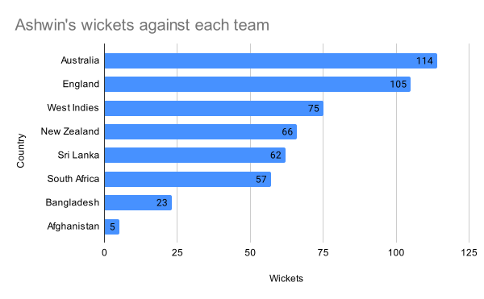

India's spin bowling lynchpin is at a stage of his career where he is creating a record/major milestone in every Test match he is playing. Earlier this month, R Ashwin captured his 500th wicket in the 3rd Test of the India-England Test series becoming the second Indian and just the ninth bowler to achieve that mark.
In the first week of March 2024, Ashwin would be playing in his 100th Test match. He will be only the 14th cricketer, among 313 Indian Test players ever, to play in 100 Tests.
Ashwin's record in Tests in phenomenal. His 507 wickets in 99 matches were achieved at an average of 23.91 and a fabulous strike rate of 51.3. Here's a breakup of the 507 wickets by opponent teams
The bulk of the 507 wickets - 354 of them to be precise - were achieved in India, the highest for any Indian bowler. The next best are Anil Kumble (350), Harbhajan Singh (265) and Kapil Dev (219). Here's a look at the average and strike rate for Ashwin venue-wise. While he has a great record in India, Sri Lanka, Bangladesh and West Indies, his average (39.4) and strike (83.7) in the pace-friendly SENA (South Africa, England, New Zealand and Australia) countries pale in comparison to other venues.
| Venue | Matches | Wkts | Best figures (Innings) | Best figures (Match) | Average | Strike Rate | 5fers | 10fers |
|---|---|---|---|---|---|---|---|---|
| in India | 59 | 354 | 7/59 | 13/140 | 21.3 | 46.6 | 27 | 6 |
| in SENA* | 25 | 71 | 4/55 | 7/121 | 39.4 | 83.7 | 0 | 0 |
| in West Indies | 6 | 32 | 7/71 | 12/131 | 19.3 | 41.4 | 4 | 1 |
| in Sri Lanka | 6 | 38 | 6/46 | 10/160 | 21.6 | 41.1 | 3 | 1 |
| in Bangladesh | 3 | 12 | 5/87 | 6/137 | 28.4 | 55.9 | 1 | 0 |
Yet another telling statistic for Ashwin's wickets is that nearly half of them are of left handed batsmen (LHB). Ashwin has been lethal against southpaws, picking 252 (the highest for any bowler) of them in his total tally of 507. The % of LHB that Ashwin has picked up - 49.7% is also the highest. See the chart for bowlers with more than 400 wickets to find out their LHB% and total number of wickets against LHBs

Where does Ashwin's records stand in the pantheon of best bowlers in the world. Only 197 bowlers have picked 100 wickets for more in Test cricket, overall. Strike Rates (balls taken to pick up a wicket) are very useful in comparing bowlers. Lower the strike rate, more lethal the bowler. We plot a graph for those bowlers' wickets against their Strike Rate (reversed). The dashed line indicates the medians for both axis.
You can select the type of bowler you want from the dropdown below. Note how the median strike rate and wickets change for pace bowlers and spinners. Mouse over the dots in the scatterplot to check the strike rates and wickets for all bowlers who picked up 100 or more wickets in Test cricket. Spinners are marked in blue (except Ashwin, who is marked in black, and pacers are marked in red.
In general, fast bowlers had a lower strike rate than spin bowlers. But Ashwin had the best strike rate among spinners who picked up 120 wickets in their career, even better than two highest wicket takers, M Muralitharan (55.05, 800 wickets) and Shane Warne (57.49, 708 wickets).When you look at overseas records on the other hand (click on dropdown to choose "Overseas"), it is clear Shane Warne (54.7) among spinners and Dale Steyn (45.5) among pacers had the best strike rates for bowlers who picked up at least 150 overseas wickets. Ashwin is not far behind, with a strike of 62.1 per wicket.
If you look closely at the scatterplot, R Ashwin stands out for having among the best strike rates among bowlers, and especially among spin bowlers. His strike rate is even better than Muthiah Muralitharan and Shane Warne's. And among Indians, his compatriot Ravindra Jadeja's comes closest. It is this tremendous strike rate that has allowed Ashwin to pick up 500 wickets quite quickly (in just 98 Tests) relative to other bowlers.
If we conducted a race among all bowlers who picked up 100 wickets or more, starting from zero and find out, where Ashwin (and others) were in the race after every milestone (50, 100, 200, 300, 400, 500) and so on, this will give us a great picture of the pantheon of bowlers who excelled at getting wickets early and also sustained that excellence.
We try to do that in this race visualisation assuming all the bowlers in the list start from zero and their matches played are taken into account. Before clicking on start race, set a endpoint for the race. Lets start with 100 wickets. When the race is begun (after pressing start), you can see who was the fastest to 50 wickets and where Ashwin figures among this list.
You can also hover over each bar (corresponding to every bowler) to see where there were when this milestone was reached by the bowlers whose names are listed in the "milestone box". Only the first sets of bowlers are listed in the milestone box. We list the milestone as 500 wickets for the race with endpoints 600 and above. We end the race at 133 matches when the last endpoint, 800 is chosen. This corresponds to Muthiah Muralitharan's wickets. Muralitharan, as the above scatterplot showed, is the highest wicket taker in Test history.
Go ahead and run the race for the different endpoints. And check out the names of bowlers who crossed various milestones. Note, the data for this exercise is limited to all the Tests that were played till Ashwin completed his milestone of 500 wickets (his 98th Test and the third Test -- played in Rajkot -- between India and England in its five-match series).